DC/DC преобразователи
Для питания микроэлектроники от постоянного напряжения используются DC-DC преобразователи, основанные на принципах широтно-импульсной модуляции — ШИМ. Их еще называют регуляторами напряжения — VRM.
Возьмём обычный вентилятор. Что произойдет, если с равной периодичностью включать вентилятор всего на полсекунды, а на следующие полсекунды выключать? Двигатель вентилятора не может мгновенно набрать максимальную скорость вращения, поэтому за такой небольшой промежуток времени он как следует не разгонится. Но и остановиться за то же время он не успеет, так как продолжит крутиться по инерции. Так что вентилятор продолжит дуть, но с гораздо меньшей мощностью. Таким образом, если включать и выключать питание вентилятора, то вместо постоянного напряжения мы получим прерывистые импульсы той же амплитуды (рис. 1).
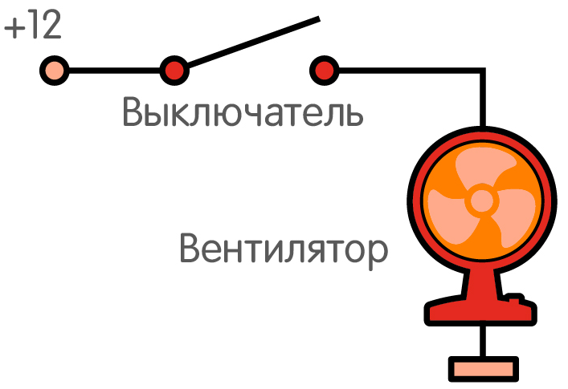
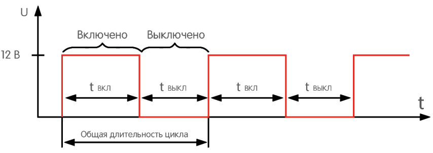
Рис. 1 -
В простейшем ШИМ-регулятор, вместо человека с выключателем, используется транзистор — он то открывается на некоторое время (ВКЛ), то закрывается (ВЫКЛ). Только делает это с частотой не два раза в секунду (2 Гц), а десятки тысяч раз (10 кГц). Такой транзистор называется «ключевым» (рис. 2).
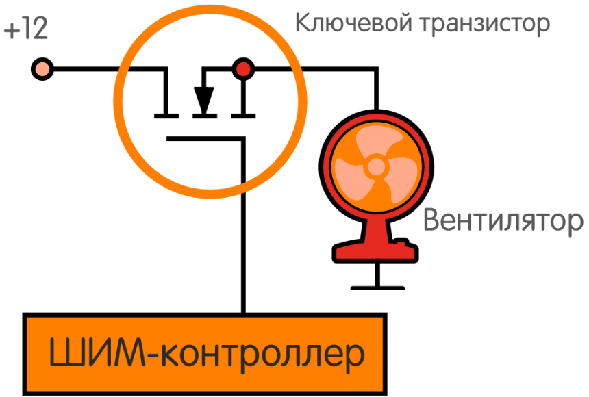
Рис. 2 - Ключевой транзистор
Для получения постоянного напряжения к ключевому транзистору (VT1) понадобятся еще несколько элементов: катушка индуктивности (L), конденсатор (C) и синхронный транзистор (VT2) (рис. 3). Катушка и конденсатор образуют LC-фильтр.
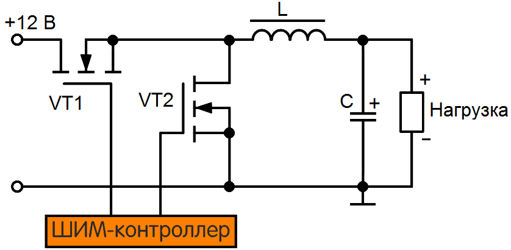
Рис. 3 - Схема простого ШИМ-регулятора
Технически можно разделить цикл преобразования на две стадии: накачка энергии в катушку с конденсатором и стадию разряда.
Первая стадия — накачиваем энергию
Когда транзистор VT1 открыт, его собрат — синхронный транзистор VT2 — закрыт. В катушке L накапливается энергия, плавно нарастает ток и заряжается конденсатор C.
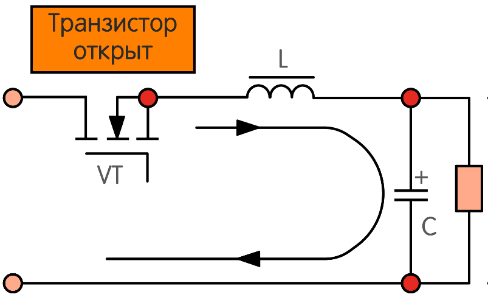
Рис. 4 - Стадия накопления энергии в простом ШИМ-регуляторе
Вторая стадия — стадия разряда
Транзистор VT1 закрывается, открывается синхронный VT2 — он нужен, чтобы соединить вход катушки с отрицательным выводом нагрузки, создавая замкнутую цепь питания. Пусть мы и разорвали на этот краткий миг связь с источником питания, но катушка никуда не делась. Накопленная в катушке энергия теперь играет роль источника питания и поддерживает силу и направление тока, а конденсатор разряжается и питает нагрузку.
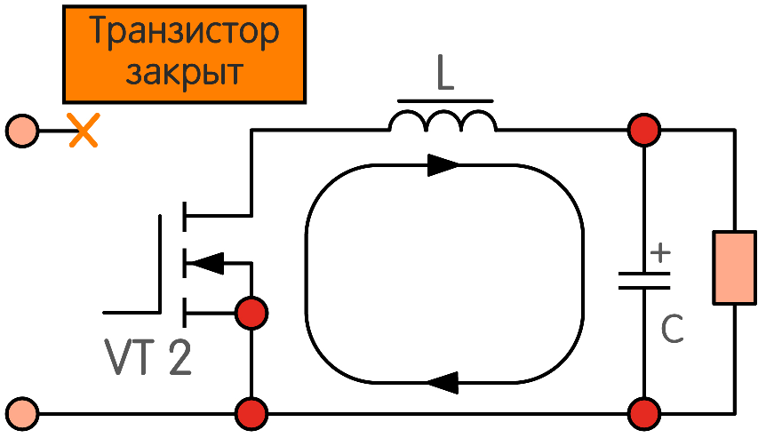
Рис. 5 - Стадия разряда в простом ШИМ-регуляторе
Затем транзистор VT1 снова открывается, а VT2 закрывается, и цикл начинается заново. Причем для наибольшей эффективности циклы повторяются с довольно высокой частотой — у современных компьютерных комплектующих миллионы раз в секунду (измеряется в мегагерцах, МГц).
Благодаря этому процессу мы получаем постоянное напряжение на нагрузке ниже, чем входное до ключевого транзистора. Импульсы как бы сглаживаются, образую близкую к прямой линию напряжения (рис. 6).
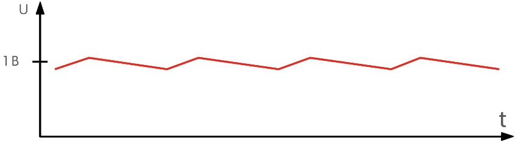
Рис. 6 - Выходное напряжение
То, что линия напряжения не совсем прямая — это нормально. В реальных условиях идеальных LC-фильтров не бывает, и всегда присутствуют небольшие пульсации напряжения. И главное, подобрать параметры катушки и конденсатора таким образом, чтобы они не успевали разрядиться полностью к концу цикла. Тогда ток становится неразрывным.
К слову, ток на всей цепи примерно равен. А так как синхронный транзистор VT2 открыт несоизмеримо дольше — работать ему приходиться, что называется, за троих.
Как настраивается преобразователь
Уровень напряжения на нагрузке будет зависеть от длительности первой и второй стадий в рамках одного цикла. Ведь чем дольше открыт транзистор VT1, тем больше энергии успевает накопить катушка и тем выше будет по итогу напряжение после LC-фильтра.
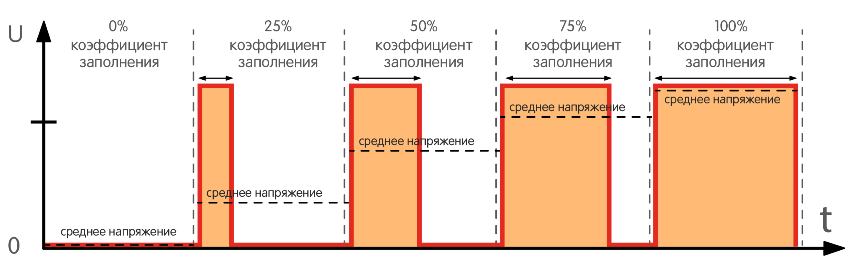
Рис. 7 - Коэффициент заполнения
Если мы поделим время первой стадии на длительность полного цикла, то получим коэффициент заполнения (D) от 0% до 100%. Чтобы узнать выходное напряжение (Uвых), нужно коэффициент заполнения умножить на входное напряжение (Uвх).
А чтобы узнать коэффициент заполнения, делим Uвых на Uвх. Например: чтобы получить типичное для центрального процессора напряжение в 1,2 В, то, поделив на входные 12 В (напряжение на выходе блока питания), получим D=0,1. Это значит, что первая стадия (накачки энергии) займет всего 10% времени от общей длительности цикла, а оставшиеся 90% времени уйдут на стадию разряда.
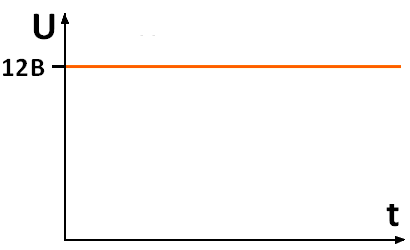 |
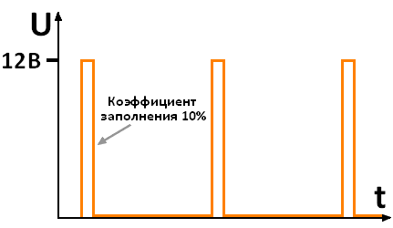 |
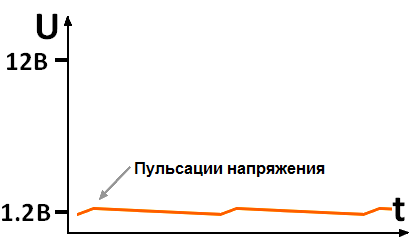 |
| а) | б) | в) |
Рис. 8 - Диаграммы напряжения простого ШИМ-регуляторе
а) входное напряжение, б) напряжение на ключевом транзисторе, в) напряжение после LC-фильтра
В мощных преобразователях часто используется не один канал с парой транзисторов, одной катушкой и одним конденсатором, а несколько параллельно подключенных каналов.
Транзистор в ключевом режиме — тоже проводник, как обычный выключатель. И сопротивление (Rds) между его входом и выходом (сток-исток) не равно нулю. Значит, чем выше ток, тем сложнее будет электронам пробиться через него, что приведет к потерям энергии и нагреву. Чтобы минимизировать этот эффект и применяются несколько фаз — нагрузка распределяется между ними поровну.
Еще один интересный способ повысить эффективность: синхронный транзистор VT2 открыт примерно в семь-восемь раз дольше чем VT1, поэтому VT2 часто дублируют и стараются подобрать более продвинутую и дорогую модель с низким Rds.
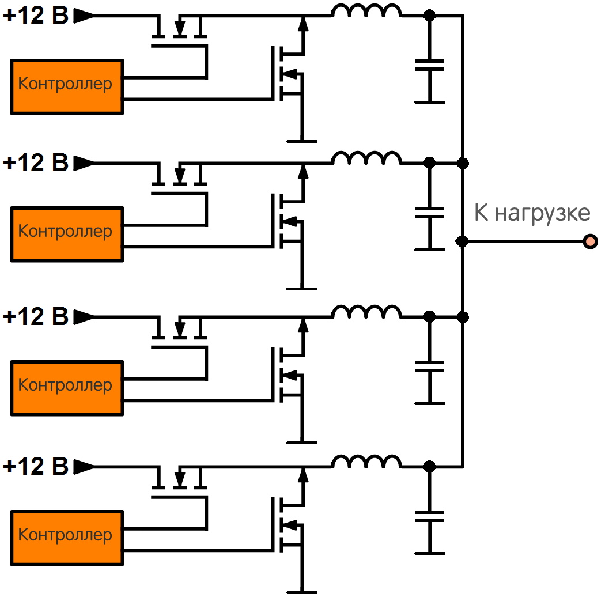
Рис. 9 - Схема многоканального ШИМ-преобразователя
Такие каналы не просто так называют «фазами». Процесс переключения транзисторов в разных каналах происходит не одновременно, а с небольшим сдвигом по фазе.

На выходе после LC-фильтров все фазы объединяются в одну, и амплитуда пульсаций становится значительно ниже, чем было бы у каждой фазы в отдельности.

Несколько десятков каналов в преобразователе - это не только меньшие потери, но и лучшее качество напряжения. Меньше пульсаций напряжения — меньше выбросов — выше стабильность всей схемы.
Источники
club.dns-shop.ru - Как работает DC-DC преобразователь напряжения